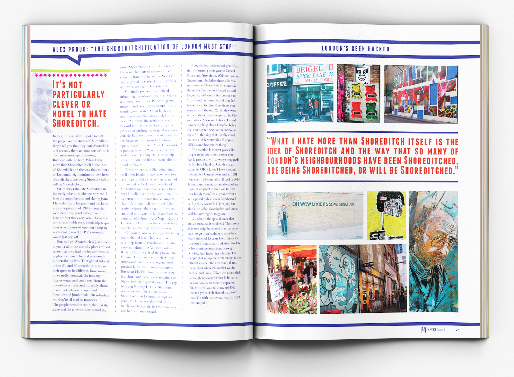
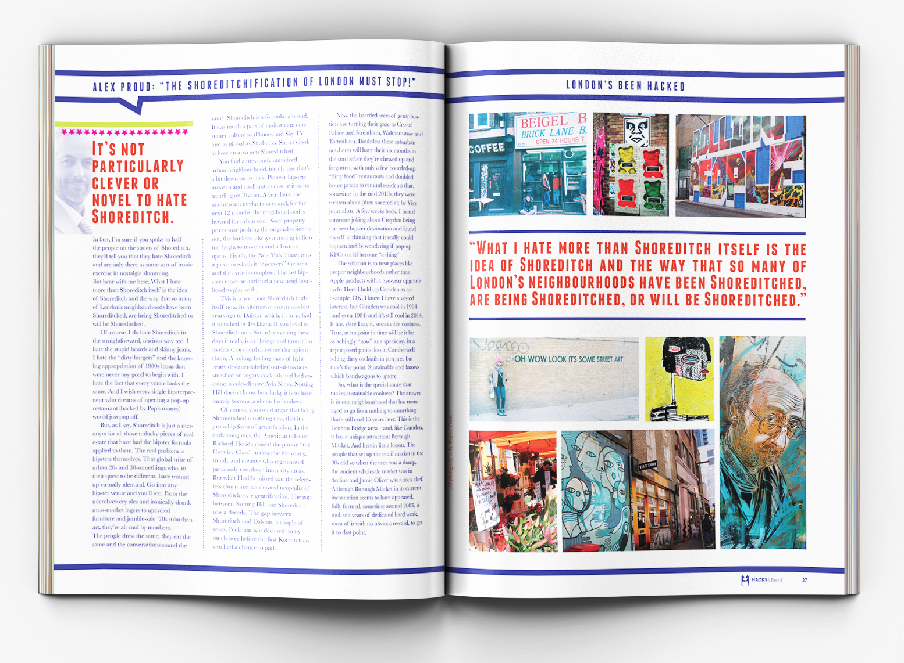
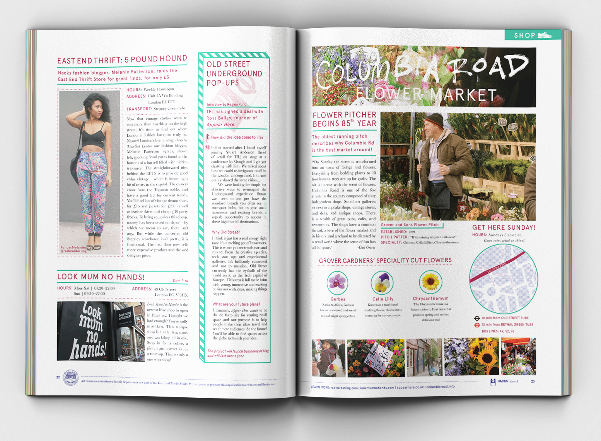
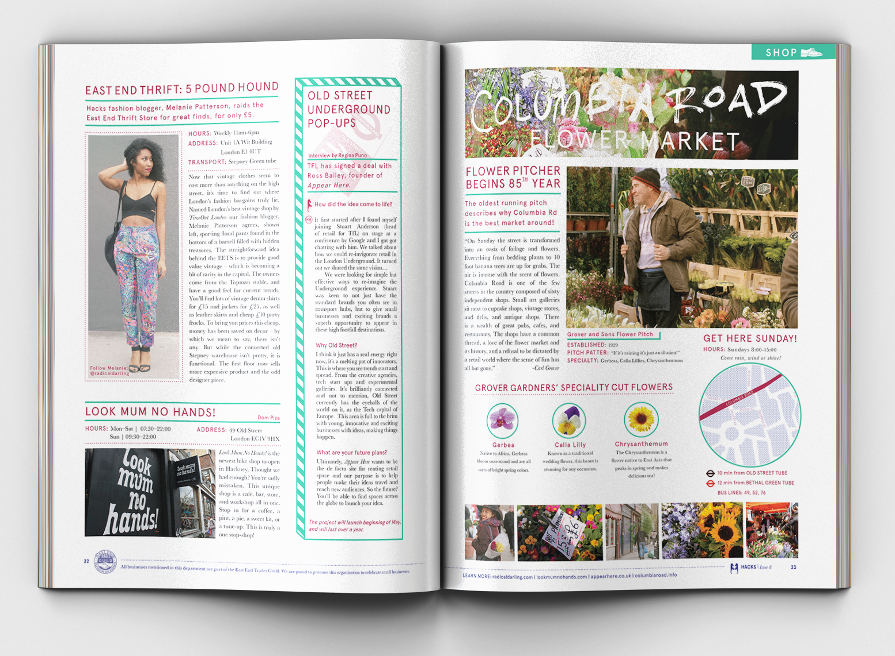

HACKS
Hacks is a lifestyle, regional magazine for the people who live and play in Hackney, London. I have designed a table of contents, department spread, and a three spread cover story. Inside, readers can find easy to scan information of news and events happening in their area, including shopping, art, concerts, restaurants, and more. Every element of the magazine, from the logo, to the content was a deliberate decision to capture the attitude of young, innovative, independent thinking residents of the infamous trendy borough of Hackney, London.

 

 
